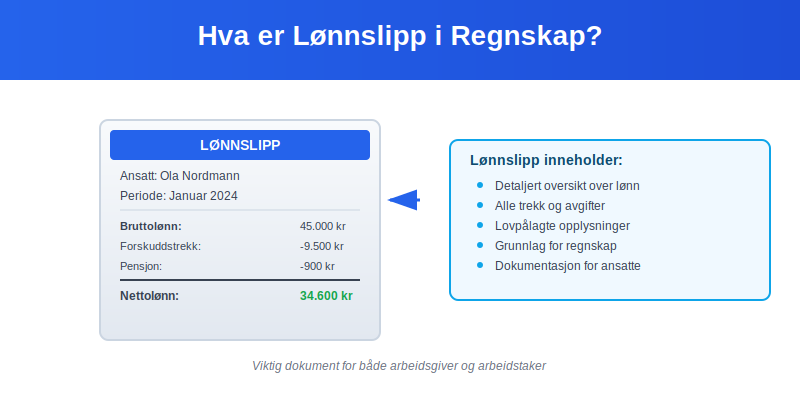
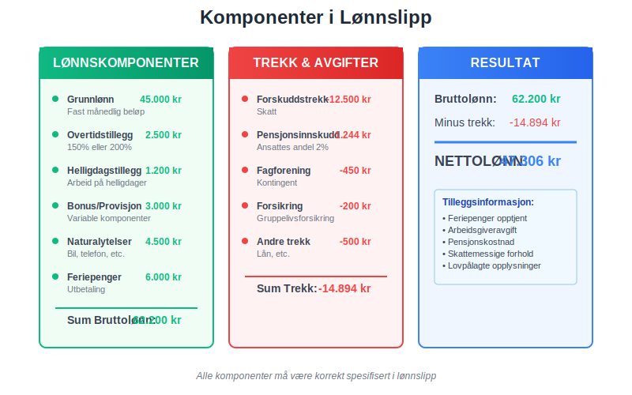
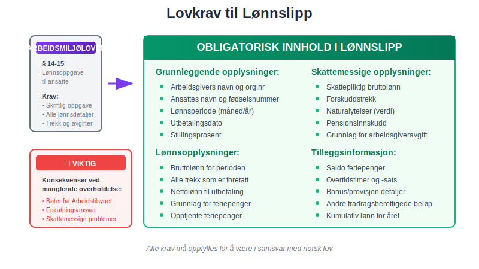
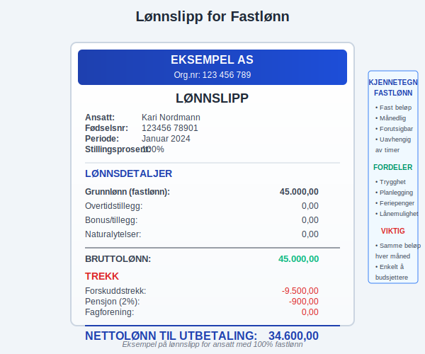
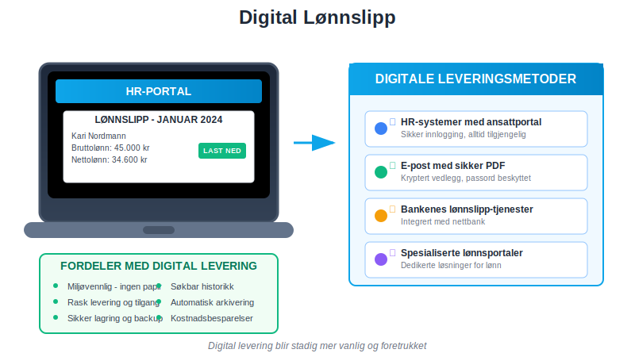
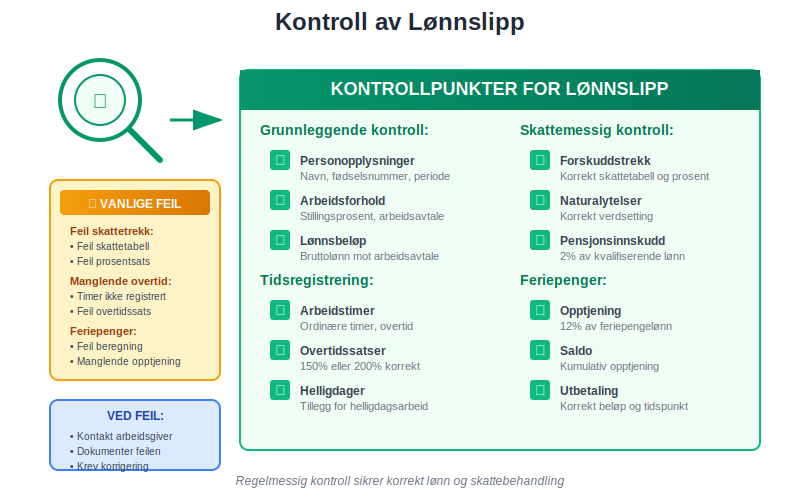
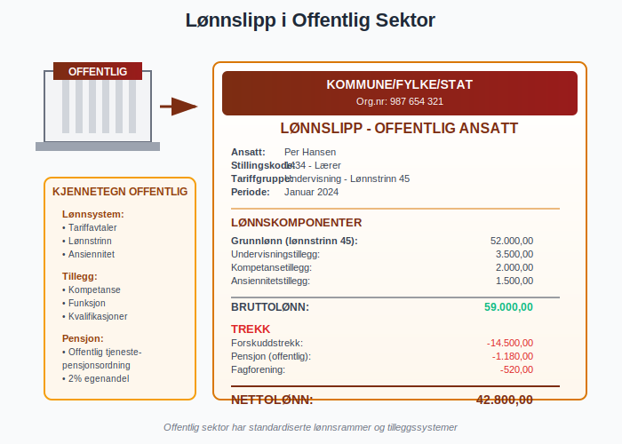
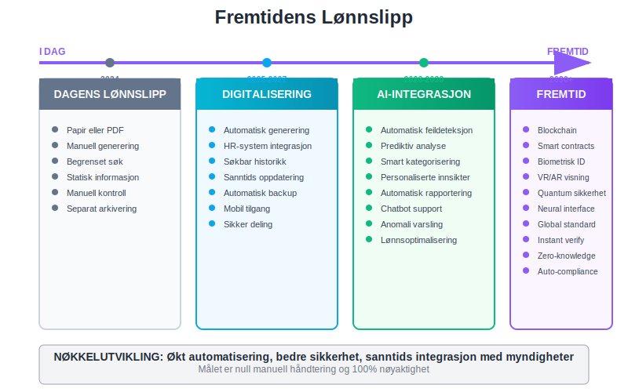

Lønnslipp er en detaljert oversikt over lønn og trekk som alle arbeidsgivere i Norge er lovpålagt å gi til sine ansatte. Dette dokumentet, også kalt lønnsspecifikasjon, viser en fullstendig oversikt over bruttolønn, forskuddstrekk, arbeidsgiveravgift og andre viktige lønnsopplysninger. Lønnslipp er et viktig dokument både for den ansatte og for regnskapsføringen i bedriften.
Se Hva er Lønn.

Hva Inneholder et Lønnslipp?
Et lønnslipp må inneholde spesifikke opplysninger som er lovpålagt i henhold til Arbeidsmiljøloven og Skatteloven. Innholdet varierer avhengig av lønnsform, men følgende elementer er standard:
Grunnleggende Opplysninger
- Arbeidsgivers navn og organisasjonsnummer
- Ansattes navn og fødselsnummer
- Lønnsperiode (måned/år)
- Utbetalingsdato
- Stillingsprosent og arbeidsforhold
Lønnskomponenter

| Komponent | Beskrivelse | Eksempel |
|---|---|---|
| Grunnlønn | Fastlønn eller timelønn | 45.000 kr |
| Overtidstillegg | Betaling for overtidsarbeid | 2.500 kr |
| Helligdagstillegg | Tillegg for arbeid på helligdager | 1.200 kr |
| Bonus/Provisjon | Variable lønnskomponenter, se Skatt på bonus | 3.000 kr |
| Naturalytelser | Bil, telefon, etc. (skattepliktig verdi) | 4.500 kr |
| Feriepenger | Feriepenger utbetaling | 6.000 kr |
Trekk og Avgifter
Lønnslipp viser også alle trekk som gjøres i lønnen:
- Forskuddstrekk - skatt som trekkes månedlig
- Pensjonsinnskudd - ansattes andel av pensjon
- Fagforeningskontingent - medlemskap i fagforening
- Andre trekk - lån, forsikringer, etc.
Lovkrav til Lønnslipp
Arbeidsmiljølovens Krav
I henhold til Arbeidsmiljøloven § 14-15 skal arbeidsgiver gi den ansatte skriftlig oppgave over:

- Bruttolønn for lønnsperioden
- Trekk som er foretatt
- Nettolønn som utbetales
- Grunnlag for beregning av feriepenger
- Opptjente feriepenger i perioden
- Saldo for opptjente feriepenger
Skattelovens Krav
Skatteloven stiller også krav til informasjon som må fremgå av lønnslipp:
- Skattepliktig bruttolønn inkludert naturalytelser
- Forskuddstrekk som er foretatt
- Grunnlag for arbeidsgiveravgift
- Pensjonsinnskudd og andre fradragsberettigede beløp
Regnskapsmessig Behandling av Lønnslipp
Bokføring av Lønnskostnader
Lønnslipp danner grunnlag for månedlig bokføring av lønnskostnader i bedriftens regnskap:
Debet: Lønnskostnad 56.200 kr
Debet: Arbeidsgiveravgift 7.924 kr
Debet: Pensjonskostnad 1.124 kr
Kredit: Skyldig lønn 50.000 kr
Kredit: Skyldig forskuddstrekk 6.200 kr
Kredit: Skyldig arbeidsgiveravgift 7.924 kr
Kredit: Skyldig pensjon 1.124 kr
Ansattreskontro
All informasjon fra lønnslipp må registreres i den ansattes ansattreskontro:
- Månedlig bruttolønn og trekk
- Kumulativ lønn for året
- Feriepenger opptjening og saldo
- Grunnlag for årsoppgave og skattemelding
Ulike Typer Lønnslipp
Lønnslipp for Fastlønn
For ansatte med fastlønn er lønnslipp relativt enkelt:

| Element | Beløp | Kommentar |
|---|---|---|
| Grunnlønn | 45.000 kr | Fast månedlig beløp |
| Forskuddstrekk | 9.500 kr | Basert på skattetabeller |
| Pensjon (2%) | 900 kr | Ansattes andel |
| Nettolønn | 34.600 kr | Til utbetaling |
Lønnslipp for Timelønn
For timelønte vises detaljert oversikt over arbeidstimer:
- Ordinære timer × timesats
- Overtidstimer × overtidssats (150% eller 200%)
- Helligdagstimer × helligdagssats
- Totalt antall timer for perioden
Lønnslipp for Akkordlønn
Ved akkordlønn vises:
- Produserte enheter × enhetspris
- Kvalitetstillegg eller -fradrag
- Garantilønn hvis akkordsats ikke når minstenivå
- Effektivitetsbonus ved høy produksjon
Digitale Lønnslipp
Elektronisk Levering
Mange bedrifter leverer nå lønnslipp elektronisk gjennom:

- HR-systemer med ansattportal
- E-post med sikker PDF
- Bankenes lønnslipp-tjenester
- Spesialiserte lønnsportaler
Krav til Digital Levering
Ved elektronisk levering må arbeidsgiver sikre:
- Sikker overføring og lagring
- Tilgjengelighet for den ansatte
- Mulighet til å skrive ut eller lagre
- Samme informasjon som papirbasert lønnslipp
Lønnslipp og Skattemelding
Grunnlag for Skattemelding
Lønnslipp danner grunnlag for:
- Lønnsinntekt i skattemeldingen
- Forskuddstrekk som er betalt
- Pensjonsinnskudd som fradrag
- Reisefradrag og andre kostnader
Kontroll og Avstemming
Ansatte bør kontrollere lønnslipp mot:

- Arbeidsavtale og lønnsvilkår
- Arbeidstimer og overtid
- Skattetrekk og tabeller
- Feriepenger opptjening
- Pensjonsgrunnlag og innskudd
Feil i Lønnslipp
Vanlige Feil
De mest vanlige feilene i lønnslipp inkluderer:
| Feiltype | Beskrivelse | Konsekvens |
|---|---|---|
| Feil skattetrekk | Feil skattetabell eller prosent | Over-/underbetaling av skatt |
| Manglende overtid | Overtidstimer ikke registrert | Underbetaling av lønn |
| Feil feriepenger | Feil beregning av opptjening | Feil feriepengebeløp |
| Naturalytelser | Manglende eller feil verdsetting | Skattemessige konsekvenser |
Håndtering av Feil
Ved oppdagelse av feil i lønnslipp:
- Umiddelbar korrigering i neste lønnslipp
- Etterbetaling eller tilbakebetaling
- Korrigering i ansattreskontro
- Melding til skattemyndighetene ved behov
Oppbevaring av Lønnslipp
For Arbeidsgiver
Arbeidsgivere må oppbevare lønnslipp og relaterte dokumenter:
- Minimum 5 år etter utløpet av regnskapsåret
- Tilgjengelig for kontroll av skattemyndighetene
- Sikker lagring med backup
- Organisert etter ansatt og periode
For Arbeidstaker
Ansatte bør oppbevare lønnslipp for:
- Skattemeldingen og eventuelle endringer
- Lånesøknader og inntektsdokumentasjon
- Pensjonsberegninger og rettigheter
- Arbeidsrettssaker og tvister
Lønnslipp i Ulike Bransjer
Offentlig Sektor
I offentlig sektor har lønnslipp ofte:

- Detaljert stillingskoding
- Tariffgruppe og lønnstrinn
- Pensjon gjennom offentlige ordninger
- Særskilte tillegg for kvalifikasjoner
Privat Sektor
Privat sektor kan ha mer variasjon:
- Bonus og provisjonsordninger
- Aksjeopsjoner og incentiver
- Fleksible goder og naturalytelser
- Variabel arbeidstime og overtid
Internasjonale Forhold
Utenlandske Arbeidstakere
For utenlandske ansatte må lønnslipp vise:
- Skattetrekk etter norske regler
- Trygdeavgift og medlemskap i folketrygden
- Særskilte fradrag for utenlandske arbeidstakere
- Valutaomregning ved behov
Norske Ansatte i Utlandet
Norske bedrifter med ansatte i utlandet må tilpasse lønnslipp til:
- Lokale skatteforhold
- Dobbeltbeskatningsavtaler
- Valutasvingninger
- Sosiale ordninger i arbeidsland
Fremtidige Utviklinger
Digitalisering
Lønnslipp blir stadig mer digitalisert:

- Automatisert generering fra HR-systemer
- Integrert med skattemyndighetenes systemer
- Sanntids oppdatering og tilgang
- AI-basert feildeteksjon og kvalitetssikring
Regulatoriske Endringer
Kommende endringer kan påvirke lønnslipp:
- Økt digitalisering av rapportering
- Nye krav til transparens
- Harmonisering med EU-regelverk
- Styrket personvern og datasikkerhet
Praktiske Tips
For Arbeidsgivere
- Implementer gode rutiner for lønnslipp-generering
- Kvalitetssikre alle beregninger før utlevering
- Opplær ansatte i å lese og forstå lønnslipp
- Ha klare prosedyrer for feilhåndtering
For Arbeidstakere
- Les lønnslipp nøye hver måned
- Sammenlign med arbeidsavtale og timeregistrering
- Ta kontakt ved uklarheter eller feil
- Oppbevar lønnslipp systematisk
Konklusjon
Lønnslipp er et fundamentalt dokument i norsk arbeidsliv som sikrer transparens og korrekt behandling av lønn og trekk. For arbeidsgivere er det viktig å ha gode rutiner for generering og kvalitetssikring av lønnslipp, mens arbeidstakere bør være aktive i å kontrollere og forstå innholdet.
Korrekt håndtering av lønnslipp er essensielt for:
- Overholdelse av lovkrav
- Korrekt regnskapsføring og skatteinnbetaling
- God dialog mellom arbeidsgiver og arbeidstaker
- Effektiv administrasjon av lønns- og personalforhold
Ved å følge beste praksis for lønnslipp sikrer bedrifter både juridisk compliance og god personaladministrasjon, samtidig som ansatte får den transparens og dokumentasjon de har krav på.